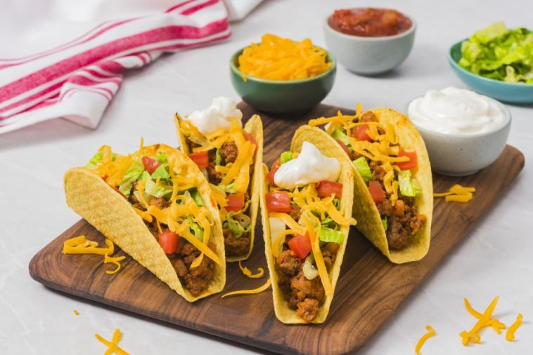

Mexican Food
Mexican food is also very popular everywhere in the world. The powerful and delicious flavors, caused by the variety of spices and natural tastes makes it a very popular food genre. The foods are also usually topped by many different savory sauces which makes it far from bland.
Tamales (Breakfast)
Photo of a tamale on a plate.[1]
Tamales are a well known Mexican dish. The outer layer that holds the fillings is made of corn masa, which is then steamed in a corn husk. Tamales have many different flavours and are a popular street food because of their cheap price and good amount of filling.
Enchiladas (Lunch)
Photo of a enchilada.[2]
Enchiladas have a very long history. They date back to Mayan times where people in the Valley of Mexico would eat corn tortillas wrapped around small fish. Modern enchiladas use both corn and flour tortillas, and have many different kinds of filling, such as meat, cheese, seafood, beans, and vegetables. Usually, the enchiladas are then covered with chilli sauce to make a delicious breakfast.
Tacos (Dinner)
Photo of a few tacos.[3]
Tacos once again, like pizza and burgers, are some of the most well known foods in the world. You could say these 3 are the famous fast foods. Tacos are popular because of their simplicity and delicious taste from the combination of vegetables, meat, and cheese topped with many different sauces. You can even eat tacos on a diet by modifying the fillings to more healthy replacements, yet still having the delicious taste. The main bread of a taco is usually a toasted tortilla that has been shaped to stay in place.